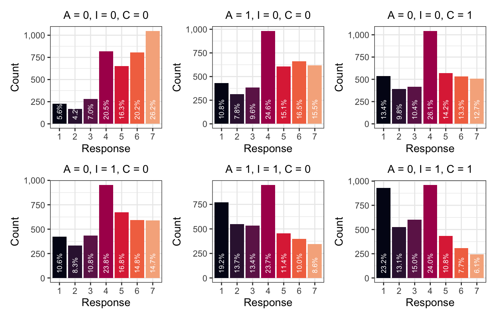

library(tidyverse)
library(brms)
library(tidybayes)
library(scales)
library(patchwork)
library(broom.mixed)
# Plot stuff
clrs <- MetBrewer::met.brewer("Lakota", 6)
theme_set(theme_bw())
# Seed stuff
set.seed(1234)
BAYES_SEED <- 1234
# Data stuff
data(Trolley, package = "rethinking")
edu_levels <- c("Elementary School",
"Middle School",
"Some High School",
"High School Graduate",
"Some College",
"Bachelor's Degree",
"Master's Degree",
"Graduate Degree")
trolley <- Trolley |>
mutate(resp_ord = factor(response, ordered = TRUE),
edu = factor(edu, levels = edu_levels, ordered = TRUE))Video #11 code
Ordered categories
The weirdness of ordered categories
Our main estimand: How do action, intention, and contact influence someone’s response to a trolley story? (Where response is measured on an ordered categorical scale ranging from 1 to 7)
I don’t know what action, intention, and contact really actually mean—I’m not a moral philosopher or anything. So I’ll just go with the mechanics of model fitting here.
To get an overview of the data, here’s the distribution of the possible trolley problem responses. The combination of its categoricalness and its orderedness makes it tricky to work with, since something like 4 inherently implies values of 1, 2, and 4 (i.e. the responses are cumulative), and since the distance between these categories isn’t the same (i.e. moving from 3 → 4 isn’t the same as moving from 6 → 7).
p1 <- trolley |>
ggplot(aes(x = resp_ord)) +
stat_count(width = 0.5, fill = clrs[3]) +
scale_y_continuous(labels = label_comma()) +
labs(x = "Response", y = "Count")
p1These responses build on each other—if someone responds with a 4, it means that they also were a 1, 2, and 3. Each value is bigger than the previous value. We can calculate the probability of each category on its own as well as the cumulative probability, or the probability of at least 4, or 5, or whatever
p2 <- trolley |>
count(resp_ord) |>
mutate(pr_k = n / sum(n),
cum_pr_k = cumsum(pr_k)) |>
ggplot(aes(x = resp_ord, y = cum_pr_k)) +
geom_line(aes(group = 0), color = clrs[2], size = 1) +
geom_point(shape = 21, fill = clrs[2], color = "white", size = 5, stroke = 1) +
scale_y_continuous(labels = label_percent()) +
labs(x = "Response", y = "Cumulative proportion")
p2But modeling probabilities is tricky, so instead we use a link function to transform the probabilities into something more amenable to linear modeling, like log odds or logits (just like logistic regression). We use the log cumulative odds that a response value \(y_i\) is some possible outcome value \(k\) (1–7 here), and each \(k\) has its own “intercept”, or \(\alpha_k\), that represents the boundary between categories
\[
\log \frac{\Pr(y_i \leq k)}{1 - \Pr(y_i \leq k)} = \alpha_k
\] We can convert probabilities to this log cumulative odds scale with qlogis(). (McElreath makes his own logit() function like logit <- function(x) log(x / (1 - x)), but that’s the same as qlogis().) Note that \(\alpha_7\) here is infinity; it’s the end of of the distribution and already contains 100% of the previous values.
trolley |>
count(resp_ord) |>
mutate(pr_k = n / sum(n),
cum_pr_k = cumsum(pr_k)) |>
mutate(alpha_k = qlogis(cum_pr_k))
## resp_ord n pr_k cum_pr_k alpha_k
## 1 1 1274 0.12829809 0.1282981 -1.9160912
## 2 2 909 0.09154079 0.2198389 -1.2666056
## 3 3 1071 0.10785498 0.3276939 -0.7186340
## 4 4 2323 0.23393756 0.5616314 0.2477857
## 5 5 1462 0.14723061 0.7088620 0.8898637
## 6 6 1445 0.14551863 0.8543807 1.7693809
## 7 7 1446 0.14561934 1.0000000 NaNp3 <- trolley |>
count(resp_ord) |>
mutate(pr_k = n / sum(n),
cum_pr_k = cumsum(pr_k)) |>
mutate(alpha_k = qlogis(cum_pr_k)) |>
ggplot(aes(x = resp_ord, y = alpha_k)) +
geom_line(aes(group = 0), size = 1, color = clrs[1]) +
geom_point(shape = 21, fill = clrs[1], color = "white", size = 5, stroke = 1) +
labs(x = "Response", y = "Log cumulative odds")
p3Here are all three plots simultaneously to see how to translate from category counts into logit-scale cumulative odds:
p1 | p2 | p3Intercept-only model
We can write a formal model for this intercept-only approach like so:
\[ \begin{aligned} y_i &\sim \operatorname{Categorical}(p) \\ \operatorname{logit}(p_k) &= \alpha_k - \phi \\ \phi &= 0 \\ \alpha_k &\sim \mathcal{N}(1, 1.5) \end{aligned} \]
That \(\phi\) is a placeholder for the offsets that come from a linear model; here it’s just 0. We can also write this using the “Ordered distribution” shorthand distribution:
\[ \begin{aligned} y_i &\sim \operatorname{Ordered\ logit}(\phi_i, \alpha) \\ \phi_i &= 0 \\ \alpha_k &\sim \mathcal{N}(1, 1.5) \end{aligned} \]
In brms we can fit this with family = cumulative(). rstanarm supports ordered logit too with stan_polr(), but I won’t use it here because it’s less fully featured than brms for these more advanced models (and it wasn’t working with an intercept-only model :shrug:).
Solomon Kurz does a neat thing with setting initial chain values for each of the intercepts at their approximate locations on the logit scale, which helps with model fit. In his code, he does this with bracketed subscripts:
inits <- list(`Intercept[1]` = -2,
`Intercept[2]` = -1,
`Intercept[3]` = 0,
`Intercept[4]` = 1,
`Intercept[5]` = 2,
`Intercept[6]` = 2.5)Nowadays, though, Stan gets mad at that and wants just one named element with a vector of values, like this:
inits <- list(Intercept = c(-2, -1, 0, 1, 2, 2.5))Let’s make the official model:
priors <- c(prior(normal(0, 1.5), class = Intercept))
inits <- list(Intercept = c(-2, -1, 0, 1, 2, 2.5))
model_int_only <- brm(
bf(resp_ord ~ 1),
data = trolley,
family = cumulative(link = "logit"),
prior = priors,
init = rep(list(inits), 4),
save_warmup = TRUE,
chains = 4, iter = 2000, seed = BAYES_SEED, cores = 4,
backend = "cmdstanr", refresh = 0,
file = "11-manual-cache/model-int-only"
)tidybayes doesn’t have a way to extract warmup samples (I don’t think?), but we can look at them with posterior::as_draws_df(). We’ll look at the first 100 draws just to see how the custom inits worked. This is actually pretty neat—the chains for each of the intercepts start at c(-2, -1, 0, 1, 2, 2.5) respectively (the first draws aren’t any of those values precisely, since they’re the draws that come after starting at those values). After the first couple dozen draws, the chains start converging on the real posterior space and dance around it. But we helped the chains get there faster than if we had set all the intercepts to 0 or some random numbers.
int_only_samples <- as_draws_df(model_int_only, inc_warmup = TRUE) |>
pivot_longer(starts_with("b_Intercept"))
head(int_only_samples, 6)
## # A tibble: 6 × 8
## disc lprior lp__ .chain .iteration .draw name value
## <dbl> <dbl> <dbl> <int> <int> <int> <chr> <dbl>
## 1 1 -10.3 -19252. 1 1 1 b_Intercept[1] -2.22
## 2 1 -10.3 -19252. 1 1 1 b_Intercept[2] -1.48
## 3 1 -10.3 -19252. 1 1 1 b_Intercept[3] -0.756
## 4 1 -10.3 -19252. 1 1 1 b_Intercept[4] 0.0863
## 5 1 -10.3 -19252. 1 1 1 b_Intercept[5] 0.889
## 6 1 -10.3 -19252. 1 1 1 b_Intercept[6] 1.42
int_only_samples |>
filter(.iteration < 100) |>
ggplot(aes(x = .iteration, y = value, color = factor(.chain))) +
geom_line(size = 0.5) +
scale_color_viridis_d(option = "rocket", end = 0.85) +
facet_wrap(vars(name), scales = "free_y")Anyway, here’s the actual post-warmup traceplot using the normal tidybayes approach, since that’s all we really care about:
model_int_only |>
gather_draws(`^b_Intercept.*`, regex = TRUE) |>
ggplot(aes(x = .iteration, y = .value, color = factor(.chain))) +
geom_line(size = 0.1) +
scale_color_viridis_d(option = "rocket", end = 0.85) +
facet_wrap(vars(.variable), scales = "free_y")…and the actual posteriors for these intercept cutpoints:
model_int_only
## Family: cumulative
## Links: mu = logit; disc = identity
## Formula: resp_ord ~ 1
## Data: trolley (Number of observations: 9930)
## Draws: 4 chains, each with iter = 2000; warmup = 1000; thin = 1;
## total post-warmup draws = 4000
##
## Population-Level Effects:
## Estimate Est.Error l-95% CI u-95% CI Rhat Bulk_ESS Tail_ESS
## Intercept[1] -1.92 0.03 -1.97 -1.86 1.00 2553 2626
## Intercept[2] -1.27 0.02 -1.31 -1.22 1.00 3728 3257
## Intercept[3] -0.72 0.02 -0.76 -0.67 1.00 4235 3490
## Intercept[4] 0.25 0.02 0.21 0.29 1.00 4496 3365
## Intercept[5] 0.89 0.02 0.85 0.93 1.00 4385 3551
## Intercept[6] 1.77 0.03 1.71 1.83 1.00 4671 3605
##
## Family Specific Parameters:
## Estimate Est.Error l-95% CI u-95% CI Rhat Bulk_ESS Tail_ESS
## disc 1.00 0.00 1.00 1.00 NA NA NA
##
## Draws were sampled using sample(hmc). For each parameter, Bulk_ESS
## and Tail_ESS are effective sample size measures, and Rhat is the potential
## scale reduction factor on split chains (at convergence, Rhat = 1).model_int_only |>
gather_draws(`^b_Intercept.*`, regex = TRUE) |>
ggplot(aes(x = .value, fill = .variable)) +
stat_halfeye(normalize = "xy") +
scale_fill_viridis_d(option = "rocket", end = 0.85, guide = "none") +
facet_wrap(vars(.variable), scales = "free_x")These cutpoints are on the logit scale, so we can unlogit them with plogis() to get probabilities:
model_int_only |>
gather_draws(`^b_Intercept.*`, regex = TRUE) |>
mutate(.value = plogis(.value)) |>
ggplot(aes(x = .value, fill = .variable)) +
stat_halfeye(normalize = "xy") +
scale_fill_viridis_d(option = "rocket", end = 0.85, guide = "none") +
scale_x_continuous(labels = label_percent()) +
facet_wrap(vars(.variable), scales = "free_x")Woot!
Thinking about shifts in thresholds
In the intercept-only model we left the \(\phi\) part of the overall model blank (\(\phi = 0\)), but in practice, we want to use that part of the model to see how covariates influence the probabilities of specific categories. \(\phi\) shifts the different \(\alpha\) cutpoints around. The non-shortcut-y model shows this:
\[ \begin{aligned} y_i &\sim \operatorname{Categorical}(p) \\ \operatorname{logit}(p_k) &= \alpha_k - \phi \\ \phi &= \beta_1 x_i + \beta_2 x_2 + \dots \\ \alpha_k &\sim \mathcal{N}(1, 1.5) \end{aligned} \]
To help with the intuition of why we subtract \(\phi\) from each \(\alpha\), let’s convert the cutpoints from the intercept-only model to probabilities using rethinking::dordlogit():
prob_k <- model_int_only |>
tidy(effects = "fixed") |>
pull(estimate) |>
rethinking::dordlogit(1:7, 0, a = _)
prob_k
## [1] 0.12837374 0.09155969 0.10794372 0.23384904 0.14722269 0.14547466 0.14557646These probabilities imply an average response outcome of 4ish:
sum(prob_k * 1:7)
## [1] 4.198717Here’s what that distribution looks like:
tibble(prob_k = prob_k,
response = 1:7) |>
ggplot(aes(x = response, y = prob_k)) +
geom_col(width = 0.5, fill = clrs[4]) +
labs(title = "Response probabilities",
subtitle = "Converted from original log odds in model")If the cumulative log odds increases each of these intercepts, the probability of lower values increases:
prob_k_plus_5 <- model_int_only |>
tidy(effects = "fixed") |>
mutate(estimate = estimate + 0.5) |>
pull(estimate) |>
rethinking::dordlogit(1:7, 0, a = _)
sum(prob_k_plus_5 * 1:7)
## [1] 3.655766
tibble(prob_k = prob_k_plus_5,
response = 1:7) |>
ggplot(aes(x = response, y = prob_k)) +
geom_col(width = 0.5, fill = colorspace::darken(clrs[4], 0.3)) +
labs(title = "Response probabilities",
subtitle = "Log odds + 0.5")
And if the cumulative log odds decreases each of these intercepts, the probability of higher values increases:
prob_k_minus_5 <- model_int_only |>
tidy(effects = "fixed") |>
mutate(estimate = estimate - 0.5) |>
pull(estimate) |>
rethinking::dordlogit(1:7, 0, a = _)
sum(prob_k_minus_5 * 1:7)
## [1] 4.729218
tibble(prob_k = prob_k_minus_5,
response = 1:7) |>
ggplot(aes(x = response, y = prob_k)) +
geom_col(width = 0.5, fill = colorspace::lighten(clrs[4], 0.3)) +
labs(title = "Response probabilities",
subtitle = "Log odds − 0.5")With a linear model, positive coefficients like \(\beta_1\) increase the value of the outcome \(\phi\), and we want that to match the direction of the shifts in category probabilities so that an increase in one of the \(\beta\)s leads to a higher probability of bigger categories. To maintain that direction, we need to subtract \(\phi\) from each of the intercepts. McElreath says this:
This way, a positive \(\beta\) value indicates that an increase in the predictor variable \(x\) results in an increase in the average response (p. 387).
All this is just to say that in the formal model we use \(\operatorname{logit}(p_k) = \alpha_k - \phi\). Neat.
Model with covariates
Here we’ll look at the effect of action, contact, and intention (whatever those are) on the distribution of possible responses to the trolley problem.
For fun, here’s the formal model in two different styles:
\[ \begin{aligned} y_i &\sim \operatorname{Categorical}(p) \\ \operatorname{logit}(p_k) &= \alpha_k - \phi_i \\ \phi_i &= \beta_1 \text{Action}_i + \beta_2 \text{Contact}_i + \beta_3 \text{Intention}_i \\ \\ B_{1, 2, 3} &\sim \mathcal{N}(0, 0.5) \\ \alpha_k &\sim \mathcal{N}(0, 1) \end{aligned} \]
Ordered logit shortcut-y thing:
\[ \begin{aligned} R_i &\sim \operatorname{Ordered\ logit}(\phi_i, \alpha) \\ \phi_i &= \beta_1 \text{Action}_i + \beta_2 \text{Contact}_i + \beta_3 \text{Intention}_i \\ \\ B_{1, 2, 3} &\sim \mathcal{N}(0, 0.5) \\ \alpha_k &\sim \mathcal{N}(0, 1) \end{aligned} \]
brms time!
priors <- c(prior(normal(0, 1.5), class = Intercept),
prior(normal(0, 0.5), class = b))
inits <- list(Intercept = c(-2, -1, 0, 1, 2, 2.5),
b = 0)
model_aci <- brm(
bf(resp_ord ~ action + intention + contact),
data = trolley,
family = cumulative(link = "logit"),
prior = priors,
init = rep(list(inits), 4),
chains = 4, iter = 2000, seed = BAYES_SEED, cores = 4,
backend = "cmdstanr", refresh = 0,
file = "11-manual-cache/model-aci-only"
)That takes a couple minutes to run, but it works great. To verify we can look at the trace plots and trank plots and see that everything converged.
model_aci |>
gather_draws(`^b_.*`, regex = TRUE) |>
ggplot(aes(x = .iteration, y = .value, color = factor(.chain))) +
geom_line(size = 0.1) +
scale_color_viridis_d(option = "rocket", end = 0.85) +
facet_wrap(vars(.variable), scales = "free_y")model_aci |>
gather_draws(`^b_.*`, regex = TRUE) |>
group_by(.variable) |>
mutate(draw_rank = rank(.value)) |>
ggplot(aes(x = draw_rank, color = factor(.chain))) +
stat_bin(geom = "step", binwidth = 250, position = position_identity(), boundary = 0) +
scale_color_viridis_d(option = "rocket", end = 0.85) +
facet_wrap(vars(.variable), scales = "free_y") +
theme(axis.text.y = element_blank(), axis.title.y = element_blank(), axis.ticks.y = element_blank())The Rhats and ESS are all fantastic too:
model_aci
## Family: cumulative
## Links: mu = logit; disc = identity
## Formula: resp_ord ~ action + intention + contact
## Data: trolley (Number of observations: 9930)
## Draws: 4 chains, each with iter = 2000; warmup = 1000; thin = 1;
## total post-warmup draws = 4000
##
## Population-Level Effects:
## Estimate Est.Error l-95% CI u-95% CI Rhat Bulk_ESS Tail_ESS
## Intercept[1] -2.83 0.05 -2.92 -2.73 1.00 2892 2799
## Intercept[2] -2.15 0.04 -2.23 -2.06 1.00 3114 2989
## Intercept[3] -1.56 0.04 -1.64 -1.49 1.00 3421 3208
## Intercept[4] -0.54 0.04 -0.61 -0.47 1.00 3667 3307
## Intercept[5] 0.12 0.04 0.05 0.20 1.00 3857 3736
## Intercept[6] 1.03 0.04 0.95 1.11 1.00 4275 3232
## action -0.70 0.04 -0.78 -0.62 1.00 3835 3063
## intention -0.72 0.04 -0.79 -0.64 1.00 4295 3033
## contact -0.95 0.05 -1.04 -0.85 1.00 3861 2987
##
## Family Specific Parameters:
## Estimate Est.Error l-95% CI u-95% CI Rhat Bulk_ESS Tail_ESS
## disc 1.00 0.00 1.00 1.00 NA NA NA
##
## Draws were sampled using sample(hmc). For each parameter, Bulk_ESS
## and Tail_ESS are effective sample size measures, and Rhat is the potential
## scale reduction factor on split chains (at convergence, Rhat = 1).So what the heck does this all mean? In all my past work with ordered logit models, I’ve just looked at predicted probabilities and marginal effects for each of the categories across a range of some predictor \(X\) because that seemed the easiest. Trying to interpret all these cumulative log odds scale things is really hard. We can inverse logit the cutpoints, but the coefficients for action, intention, and contact are all doing… something?… to them? Easiest way to see what’s going on is to simulate.
simulated_conditions <- tribble(
~title, ~newdata,
"A = 0, I = 0, C = 0", tibble(action = 0, intention = 0, contact = 0),
"A = 0, I = 1, C = 0", tibble(action = 0, intention = 1, contact = 0),
"A = 1, I = 0, C = 0", tibble(action = 1, intention = 0, contact = 0),
"A = 1, I = 1, C = 0", tibble(action = 1, intention = 1, contact = 0),
"A = 0, I = 0, C = 1", tibble(action = 0, intention = 0, contact = 1),
"A = 0, I = 1, C = 1", tibble(action = 0, intention = 1, contact = 1)
) |>
mutate(pred_plot = map2(newdata, title, ~{
model_aci |>
add_predicted_draws(newdata = .x) |>
ungroup() |>
count(.prediction) |>
mutate(prop = n / sum(n),
prop_nice = label_percent(accuracy = 0.1)(prop)) |>
ggplot(aes(x = .prediction, y = n)) +
geom_col(aes(fill = .prediction)) +
geom_text(aes(y = 50, label = prop_nice), color = "white", size = 2.5,
angle = 90, hjust = 0) +
scale_y_continuous(labels = label_comma()) +
scale_fill_viridis_d(option = "rocket", end = 0.85, guide = "none") +
labs(x = "Response", y = "Count",
title = .y) +
theme(plot.title = element_text(size = rel(1), hjust = 0.5))
}))
wrap_plots(simulated_conditions$pred_plot, nrow = 2, byrow = FALSE)
When we move from all the conditions being off (A = 0, I = 0, C = 0) and then flip on Intention, the probability of the story seeming appropriate drops. Originally the most common response was a 7; now it’s a 4. Flipping A to 1 also increases the probability of lower categories, and using both A and I makes 1s really common. The same thing happens with C—flipping C to 1 increases the probability of 4, and when using both I and C, 1 becomes the most common response. The coefficients for all these covariates are negative, so enabling them shifts the distribution down and makes lower response values more likely.
Model with covariates and gender-based stratification
We can include other competing causes here, like stratifying by gender. McElreath uses ulam() to directly stratify these terms by gender like bA[G]*A + bI[G]*I + bC[G]*C. We can do the same thing with brms either with some weird nl syntax or by including an interaction term with : instead of * (just like in video 4 here).
However, neither the nl syntax nor the : approaches seem to work here. With regular regression, we can remove the intercept term (with 0 + ...) and get group-specific coefficients. With ordered logit, though, the model for \(\phi\) doesn’t have an intercept, so including 0 + ... doesn’t work. The coefficients we get are still correct—the model isn’t wrong. It’s just that the pairs of coefficients aren’t the full values—one is an offset. Like with action, the mean of the two action coefficients look like this:
action -0.89
action:male 0.35In McElreath’s video, they look like this:
bA[1] -0.88
bA[2] -0.53These are the same. It’s just that action:male is the offset from action when male is set to 1, making its coefficient -0.89 + 0.35 = -0.54, just like bA[2].
priors <- c(prior(normal(0, 1.5), class = Intercept),
prior(normal(0, 0.5), class = b))
inits <- list(Intercept = c(-2, -1, 0, 1, 2, 2.5),
b = 0)
model_aci_gender <- brm(
bf(resp_ord ~ action + action:male + intention +
intention:male + contact + contact:male),
data = trolley,
family = cumulative(link = "logit"),
prior = priors,
init = rep(list(inits), 4),
chains = 4, iter = 2000, seed = BAYES_SEED, cores = 4,
backend = "cmdstanr", threads = threading(2),
file = "11-manual-cache/model-aci-gender", refresh = 0
)By default we get the offsets for male:
model_aci_gender
## Family: cumulative
## Links: mu = logit; disc = identity
## Formula: resp_ord ~ action + action:male + intention + intention:male + contact + contact:male
## Data: trolley (Number of observations: 9930)
## Draws: 4 chains, each with iter = 2000; warmup = 1000; thin = 1;
## total post-warmup draws = 4000
##
## Population-Level Effects:
## Estimate Est.Error l-95% CI u-95% CI Rhat Bulk_ESS Tail_ESS
## Intercept[1] -2.85 0.05 -2.94 -2.75 1.00 3918 3277
## Intercept[2] -2.16 0.04 -2.25 -2.08 1.00 4372 3395
## Intercept[3] -1.58 0.04 -1.66 -1.50 1.00 4746 3541
## Intercept[4] -0.54 0.04 -0.62 -0.47 1.00 5084 3577
## Intercept[5] 0.13 0.04 0.06 0.20 1.00 5203 4048
## Intercept[6] 1.05 0.04 0.97 1.12 1.00 5526 4131
## action -0.89 0.05 -0.99 -0.79 1.00 3884 3272
## intention -0.90 0.05 -0.99 -0.81 1.00 4021 2910
## contact -1.07 0.07 -1.20 -0.93 1.00 3989 3030
## action:male 0.35 0.06 0.23 0.46 1.00 4153 3340
## intention:male 0.34 0.06 0.22 0.45 1.00 3300 3157
## contact:male 0.21 0.08 0.04 0.38 1.00 3781 2904
##
## Family Specific Parameters:
## Estimate Est.Error l-95% CI u-95% CI Rhat Bulk_ESS Tail_ESS
## disc 1.00 0.00 1.00 1.00 NA NA NA
##
## Draws were sampled using sample(hmc). For each parameter, Bulk_ESS
## and Tail_ESS are effective sample size measures, and Rhat is the potential
## scale reduction factor on split chains (at convergence, Rhat = 1).But we can wrangle the data a little to replicate what McElreath has with his precis() output:
model_aci_gender |>
spread_draws(`^b_.*`, regex = TRUE) |>
mutate(`b_action:male` = b_action + `b_action:male`,
`b_intention:male` = b_intention + `b_intention:male`,
`b_contact:male` = b_contact + `b_contact:male`) |>
pivot_longer(starts_with("b_"), names_to = ".variable") |>
group_by(.variable) |>
summarize(avg = mean(value))
## # A tibble: 12 × 2
## .variable avg
## <chr> <dbl>
## 1 b_action -0.890
## 2 b_action:male -0.544
## 3 b_contact -1.07
## 4 b_contact:male -0.858
## 5 b_intention -0.901
## 6 b_intention:male -0.563
## 7 b_Intercept[1] -2.85
## 8 b_Intercept[2] -2.16
## 9 b_Intercept[3] -1.58
## 10 b_Intercept[4] -0.545
## 11 b_Intercept[5] 0.131
## 12 b_Intercept[6] 1.05Cool cool. Everything here makes people rate things lower, but with different magnitudes—men shift less than women.
Ordered predictors and monotonic effects
According to the DAG in this example, we need to also control for age and education to close backdoors for identification. That seems straightforward enough—here’s how those two variables are distributed:
p1 <- trolley |>
ggplot(aes(x = edu)) +
stat_count(width = 0.5, fill = clrs[6]) +
scale_x_discrete(labels = label_wrap(15)) +
scale_y_continuous(labels = label_comma()) +
labs(x = "Education", y = "Count")
p2 <- trolley |>
ggplot(aes(x = age)) +
stat_count(fill = clrs[5]) +
labs(x = "Age", y = "Count")
p1 / p2Age is fine and continuous and we can just throw + age into the model. Education is a little trickier though. It’s an ordered category, which means it is analogous to the outcome variable on the lefthand side of the model. We don’t want to assume that the distance between each ordinal value in the response is the same; we also don’t want to assume that the distance between values in an ordinal predictor is the same either. Including a factor version of education in a regression model gives us category-specific coefficients (+ factor(educ)), this removes the inherent cumulative ordering (where someone with a doctorate also has some high school). Including a numeric version of education (+ as.numeric(educ)) in a regression model forces the correct cumulative ordering, but then it assumes that distance between 1→2 is the same as 5→6, and so on, and we don’t want that. We want to somehow maintain the ordered categorical properties of education on the righthand side of the model.
This is all super neat and new to me! I’ve never worried about the weirdness inherent in working with righthand side ordered variables and have just lived with their categorical coefficients. But there’s a magical way of dealing with this that mostly goes over my head and beyond my math skills. We can define the probability of specific levels of education as a series of cumulative cutpoints (super similar to what we do with categorical outcomes), like this:
| Level | Equation |
|---|---|
| Elementary school | \(\phi = 0\) |
| Middle school | \(\phi = \delta_1\) |
| Some high school | \(\phi = \delta_1 + \delta_2\) |
| High school | \(\phi = \delta_1 + \delta_2 + \delta_3\) |
| Some college | \(\phi = \delta_1 + \delta_2 + \delta_3 + \delta_4\) |
| College | \(\phi = \delta_1 + \delta_2 + \delta_3 + \delta_4 + \delta_5\) |
| Masters | \(\phi = \delta_1 + \delta_2 + \delta_3 + \delta_4 + \delta_5 + \delta_6\) |
| Doctorate | \(\phi = \delta_1 + \delta_2 + \delta_3 + \delta_4 + \delta_5 + \delta_6 + \delta_7\) |
We can then collapse all these levels into a single sum that adds up to 1, creating something called a simplex (or a vector that adds to 1), and we can include that as a term in the regression model:
\[ \phi_i = \beta_\text{E} \sum_{j = 0}^{\text{E}_i - 1} \delta_j \]
Phew, that’s wild. This new term takes a new set of priors, both for the \(\beta\) coefficient and for each of the \(\delta\) cutpoints. In the video and book, McElreath uses a Dirichlet prior for these \(\delta\) values.
McElreath’s ulam() function requires manual construction of the simplex parameter for education, but brms can do this all automatically if we put the education term inside mo(), which forces it to be a monotonic categorical variable.
priors <- c(prior(normal(0, 1.5), class = Intercept),
prior(normal(0, 0.5), class = b),
prior(normal(0, 0.143), class = b, coef = moedu),
prior(dirichlet(2, 2, 2, 2, 2, 2, 2), class = simo, coef = moedu1))
model_monotonic <- brm(
bf(resp_ord ~ 1 + action + contact + intention + mo(edu)),
data = trolley,
family = cumulative(link = "logit"),
prior = priors,
chains = 4, iter = 2000, seed = BAYES_SEED, cores = 4,
backend = "cmdstanr", threads = threading(2),
file = "11-manual-cache/model-monotonic"
)Oooh look at all these parameters now! We have a whole new section I’ve never seen before called “Simplex Parameters”
model_monotonic
## Family: cumulative
## Links: mu = logit; disc = identity
## Formula: resp_ord ~ 1 + action + contact + intention + mo(edu)
## Data: trolley (Number of observations: 9930)
## Draws: 4 chains, each with iter = 2000; warmup = 1000; thin = 1;
## total post-warmup draws = 4000
##
## Population-Level Effects:
## Estimate Est.Error l-95% CI u-95% CI Rhat Bulk_ESS Tail_ESS
## Intercept[1] -3.12 0.17 -3.51 -2.84 1.00 1832 1857
## Intercept[2] -2.44 0.17 -2.83 -2.16 1.00 1834 1819
## Intercept[3] -1.86 0.17 -2.24 -1.58 1.00 1833 1941
## Intercept[4] -0.84 0.16 -1.22 -0.57 1.00 1860 1941
## Intercept[5] -0.17 0.16 -0.55 0.10 1.00 1864 2021
## Intercept[6] 0.74 0.17 0.35 1.01 1.00 1814 1916
## action -0.70 0.04 -0.78 -0.62 1.00 3961 3329
## contact -0.95 0.05 -1.05 -0.86 1.00 3685 2854
## intention -0.72 0.04 -0.79 -0.65 1.00 4434 3307
## moedu -0.05 0.03 -0.11 -0.01 1.00 1852 1895
##
## Simplex Parameters:
## Estimate Est.Error l-95% CI u-95% CI Rhat Bulk_ESS Tail_ESS
## moedu1[1] 0.26 0.15 0.04 0.59 1.00 2300 2342
## moedu1[2] 0.14 0.09 0.02 0.36 1.00 3906 2317
## moedu1[3] 0.19 0.11 0.03 0.43 1.00 3915 2433
## moedu1[4] 0.16 0.09 0.03 0.38 1.00 3701 2816
## moedu1[5] 0.04 0.04 0.00 0.13 1.00 2793 2354
## moedu1[6] 0.09 0.06 0.01 0.24 1.00 3433 2752
## moedu1[7] 0.12 0.07 0.02 0.30 1.00 4205 3054
##
## Family Specific Parameters:
## Estimate Est.Error l-95% CI u-95% CI Rhat Bulk_ESS Tail_ESS
## disc 1.00 0.00 1.00 1.00 NA NA NA
##
## Draws were sampled using sample(hmc). For each parameter, Bulk_ESS
## and Tail_ESS are effective sample size measures, and Rhat is the potential
## scale reduction factor on split chains (at convergence, Rhat = 1).We can even interact the education monotonic simplex thing with other variables like age:
priors <- c(prior(normal(0, 1.5), class = Intercept),
prior(normal(0, 0.5), class = b),
prior(normal(0, 0.143), class = b, coef = moedu),
prior(dirichlet(2, 2, 2, 2, 2, 2, 2), class = simo, coef = moedu1))
model_monotonic_age <- brm(
bf(resp_ord ~ action*male + intention*male + contact*male +
age*male + mo(edu)*male),
data = trolley,
family = cumulative(link = "logit"),
prior = priors,
chains = 4, iter = 2000, seed = BAYES_SEED, cores = 4,
backend = "cmdstanr", threads = threading(2),
file = "11-manual-cache/model-monotonic-age"
)Though it takes a while to fit these mo() models! (This is on an 8-core 2021 M1 MacBook Pro)
# No interactions
rstan::get_elapsed_time(model_monotonic$fit) |>
as_tibble(rownames = "chain") |>
mutate(total = lubridate::as.duration(warmup + sample))
## # A tibble: 4 × 4
## chain warmup sample total
## <chr> <dbl> <dbl> <Duration>
## 1 chain:1 294. 165. 459.86s (~7.66 minutes)
## 2 chain:2 295. 136. 430.263s (~7.17 minutes)
## 3 chain:3 279. 169. 448.288s (~7.47 minutes)
## 4 chain:4 236. 189. 425.502s (~7.09 minutes)
# With age*education interaction
rstan::get_elapsed_time(model_monotonic_age$fit) |>
as_tibble(rownames = "chain") |>
mutate(total = lubridate::as.duration(warmup + sample))
## # A tibble: 4 × 4
## chain warmup sample total
## <chr> <dbl> <dbl> <Duration>
## 1 chain:1 407. 220. 626.811s (~10.45 minutes)
## 2 chain:2 377. 255. 632.486s (~10.54 minutes)
## 3 chain:3 449. 233. 681.639s (~11.36 minutes)
## 4 chain:4 437. 218. 654.839s (~10.91 minutes)Wild. Absolutely bonkers. I have no idea what to do with all these moving parts lol.
model_monotonic_age
## Family: cumulative
## Links: mu = logit; disc = identity
## Formula: resp_ord ~ action * male + intention * male + contact * male + age * male + mo(edu) * male
## Data: trolley (Number of observations: 9930)
## Draws: 4 chains, each with iter = 2000; warmup = 1000; thin = 1;
## total post-warmup draws = 4000
##
## Population-Level Effects:
## Estimate Est.Error l-95% CI u-95% CI Rhat Bulk_ESS Tail_ESS
## Intercept[1] -3.12 0.26 -3.71 -2.69 1.00 1222 1722
## Intercept[2] -2.43 0.26 -3.02 -2.01 1.00 1226 1829
## Intercept[3] -1.85 0.26 -2.44 -1.43 1.00 1221 1750
## Intercept[4] -0.80 0.26 -1.39 -0.39 1.00 1225 1772
## Intercept[5] -0.11 0.26 -0.69 0.30 1.00 1231 1829
## Intercept[6] 0.82 0.26 0.24 1.24 1.00 1240 1864
## action -0.55 0.06 -0.67 -0.44 1.00 2307 2667
## male 0.53 0.19 0.13 0.87 1.00 1637 2178
## intention -0.66 0.05 -0.76 -0.56 1.00 2725 2680
## contact -0.77 0.07 -0.90 -0.63 1.00 2560 2896
## age -0.00 0.00 -0.00 0.00 1.00 5184 3384
## action:male -0.29 0.08 -0.45 -0.14 1.00 2192 2740
## male:intention -0.12 0.07 -0.27 0.02 1.00 2664 3138
## male:contact -0.37 0.09 -0.56 -0.18 1.00 2612 3033
## male:age -0.01 0.00 -0.01 -0.00 1.00 5852 2837
## moedu -0.12 0.04 -0.21 -0.06 1.00 1163 1756
## moedu:male 0.13 0.03 0.07 0.19 1.00 1402 2017
##
## Simplex Parameters:
## Estimate Est.Error l-95% CI u-95% CI Rhat Bulk_ESS Tail_ESS
## moedu1[1] 0.32 0.14 0.06 0.58 1.00 1592 2122
## moedu1[2] 0.10 0.06 0.01 0.25 1.00 3579 2303
## moedu1[3] 0.15 0.08 0.03 0.35 1.00 4135 2789
## moedu1[4] 0.20 0.08 0.06 0.39 1.00 2237 2240
## moedu1[5] 0.03 0.02 0.00 0.07 1.00 2811 2136
## moedu1[6] 0.15 0.07 0.04 0.30 1.00 2521 2965
## moedu1[7] 0.06 0.04 0.01 0.18 1.00 3165 2425
## moedu:male1[1] 0.07 0.06 0.00 0.22 1.00 3129 1703
## moedu:male1[2] 0.17 0.11 0.01 0.41 1.00 2647 2341
## moedu:male1[3] 0.19 0.11 0.01 0.41 1.00 2808 1838
## moedu:male1[4] 0.04 0.03 0.00 0.13 1.00 3275 1825
## moedu:male1[5] 0.31 0.10 0.15 0.53 1.00 2006 2331
## moedu:male1[6] 0.19 0.09 0.04 0.37 1.00 2191 1994
## moedu:male1[7] 0.03 0.03 0.00 0.12 1.00 4564 2097
##
## Family Specific Parameters:
## Estimate Est.Error l-95% CI u-95% CI Rhat Bulk_ESS Tail_ESS
## disc 1.00 0.00 1.00 1.00 NA NA NA
##
## Draws were sampled using sample(hmc). For each parameter, Bulk_ESS
## and Tail_ESS are effective sample size measures, and Rhat is the potential
## scale reduction factor on split chains (at convergence, Rhat = 1).